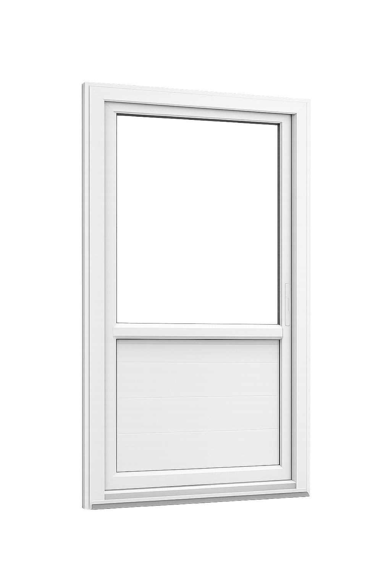

Balcony sliding window systems
Premium white uPVC frames for large apartment and villa openings.
Our range
We help you select the right frame, glass, mesh, hardware, and finish for each space. Backed by 7+ years of hands-on installation experience.
Premium white uPVC frames for large apartment and villa openings.

Full-home window and door planning for modern independent houses.

Clean exterior windows for natural light, weather sealing, and durability.

Room-friendly combinations that balance airflow, visibility, and privacy.

Practical glass and mesh options for daily ventilation and insect control.

Large panel systems for building fronts, balconies, and upper floors.

Compact uPVC units for rooms, utility spaces, and replacement projects.

Smooth movement, neat finish, and easier maintenance for everyday use.
Space-saving systems for balconies, bedrooms, and wide openings.
Best for apartmentsSide-hinged windows with excellent sealing and ventilation control.
Best for bedroomsFlexible opening styles for premium homes and quiet rooms.
Best for comfortBalcony and patio doors with smooth movement and wide glass views.
Best for balconiesElegant double-door systems for villas, terraces, and statement rooms.
Best for villasLarge picture windows and combination frames for natural light.
Best for viewsOptions
Our team explains tradeoffs clearly, so you can balance price, insulation, appearance, and long-term maintenance before ordering.